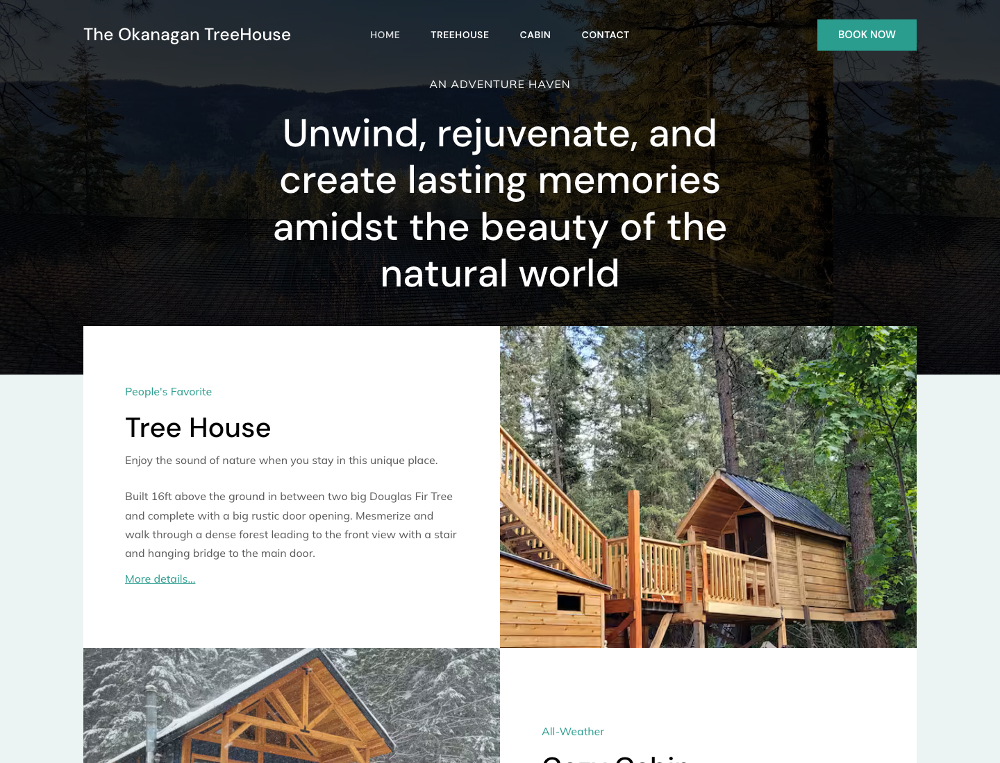

SEO + web build
Cool Runnings
Local yard-care site built around search demand, content scale, and ranking proof.
Marketing Engineer
AI-enabled marketing systems
I turn context, brand knowledge, APIs, and AI tooling into marketing systems people can actually use: public websites, sales materials, dashboards, and workflow automation.
Portfolio
This is not a generic web-design portfolio. It is a record of marketing surfaces, sales assets, content systems, and automation built with AI-assisted execution and human judgment.
SEO + web build
Local yard-care site built around search demand, content scale, and ranking proof.

Community web system
Visitor paths, events, forms, bulletins, and editorial workflows for a real community organization.

Custom site
Standalone accommodation concept. Portfolio version should become a hosted Claude demo before linking publicly.

Positioning + GTM
Public positioning plus private workflows for proposals, maps, enrichment, and sales enablement.
AI workflows
The deeper proof is in the workflow: research, references, structured prompts, AI execution, human review, and deployment paths that turn ideas into finished marketing assets.
Photography + copy direction
A structured prompt controls wardrobe, product, accessories, realism, framing, negative space, and hard bans before generating the image.
{
"subject": "adult model",
"wardrobe": {
"shirt": "moss green crewneck",
"headphones": "matte black over-ear"
},
"product": "plain white ceramic coffee cup",
"pose": "holding cup with both hands near chest",
"composition": "16:10, waist-up, right of center",
"negative_space": "left side for annotations",
"lighting": "soft editorial daylight",
"hard_bans": ["logos", "text", "fake UI", "stock smile"],
"review_gate": "realistic hands, brand-fit, usable crop"
}
Website pipeline
Generate full-page website directions, score them, decompose the selected image into typography/layout/interaction rules, build it, and QA responsive behavior.
SEO content at scale
Use SERP and keyword signals, compare against existing brand content, produce outlines and drafts, run checks, and hand off to Google Drive or CMS workflows.
Deploy presentation workflow
Claude artifact or local HTML presentation becomes a password-protected Vercel page, Webflow CMS item, embed, public URL, and tracking row so sales can share it without developer handholding.
AI enablement
Turn a workflow into a tool, skill, playbook, and training path so a team can use AI without losing quality control.
Outcomes
The public site should use sourced claims, anonymized examples, and cautious wording. The system can tie outcomes back to the output branches that produced them.
Ecommerce organic/search context where source-safe.
Anonymized AI sales lift example, pending source-safe wording.
GTM growth claim only if tied to exact source, period, and initiative.